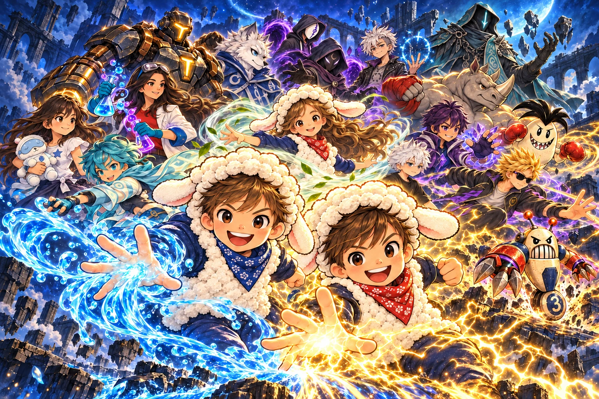
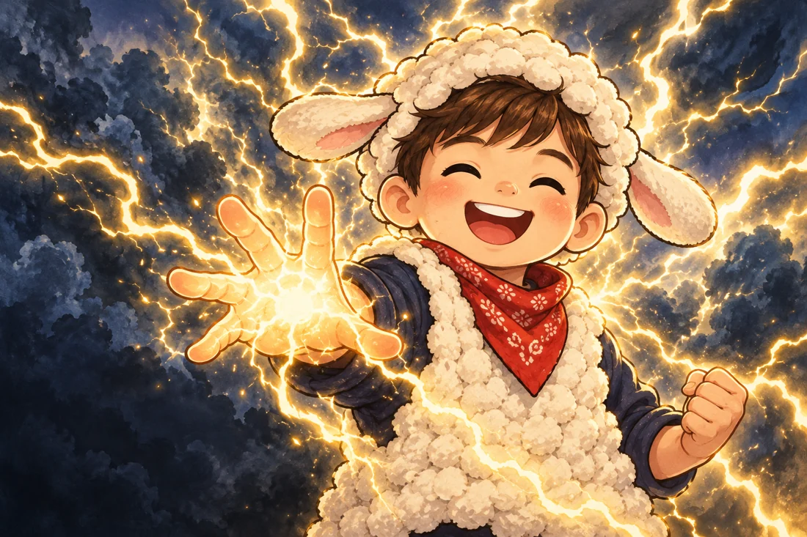
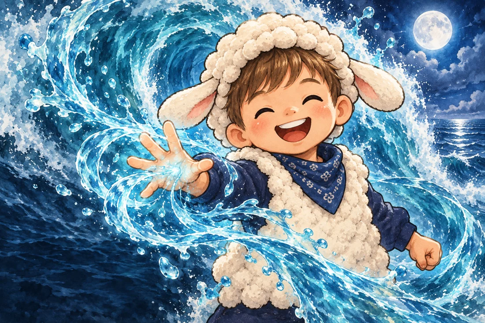
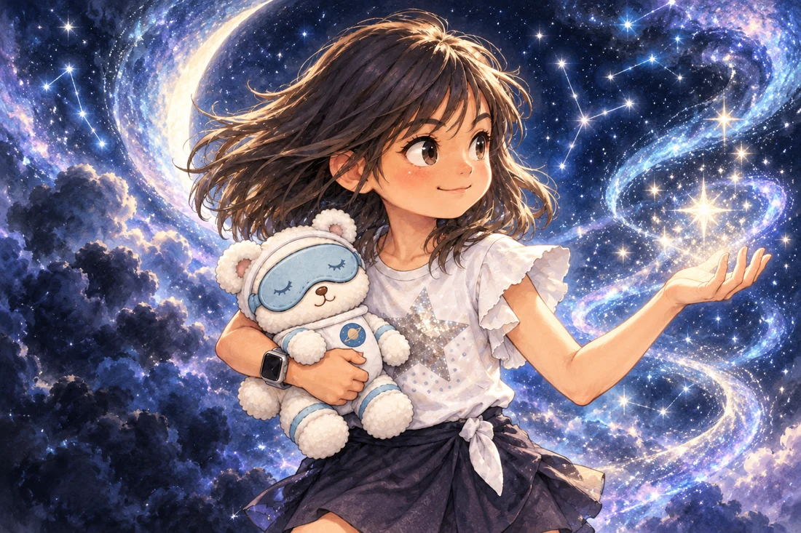
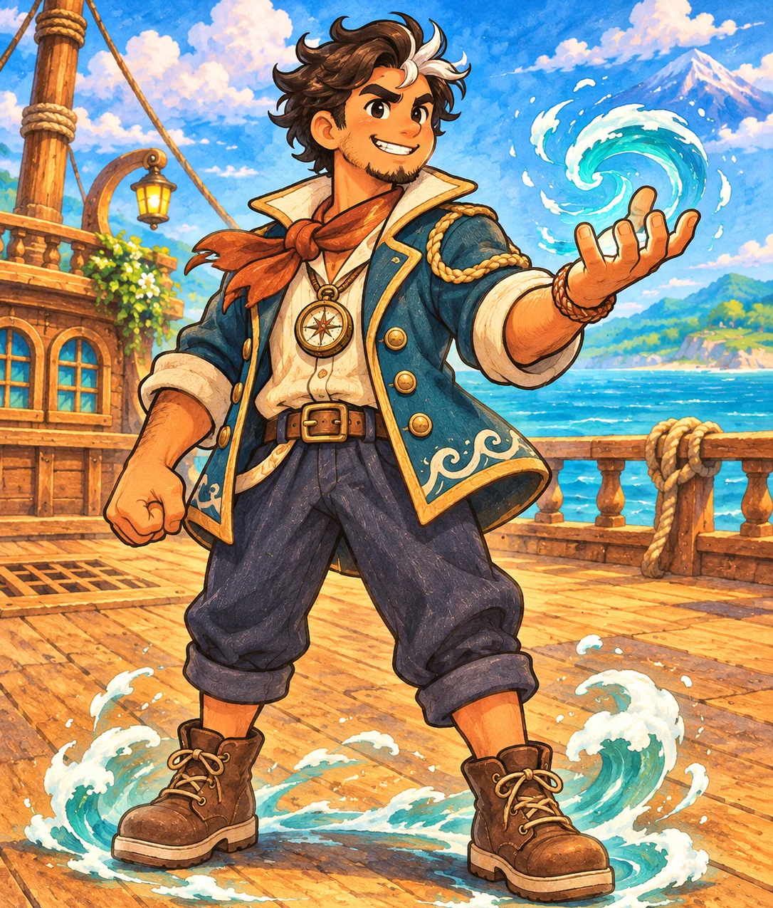
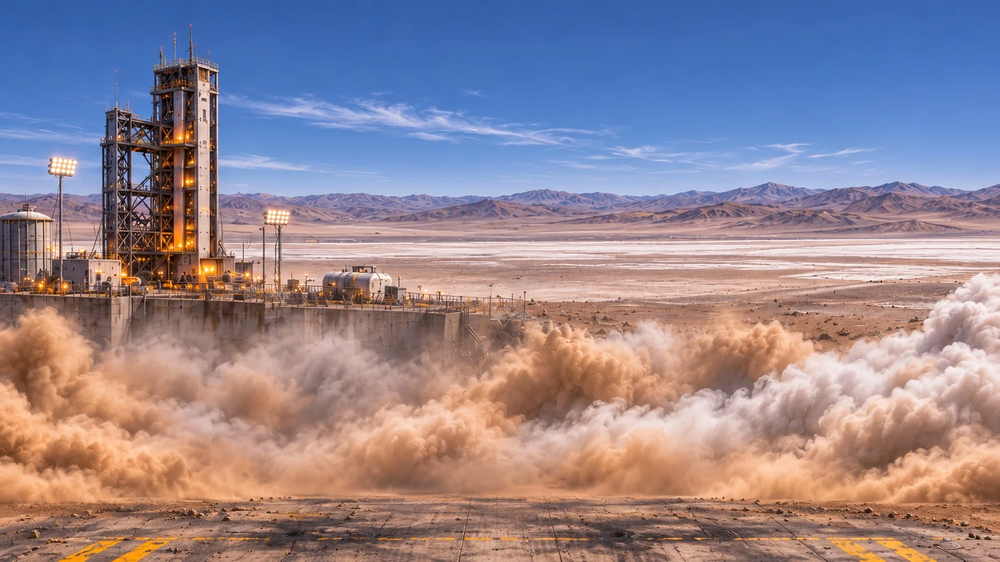
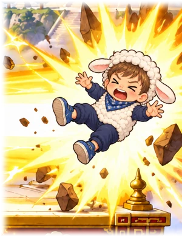
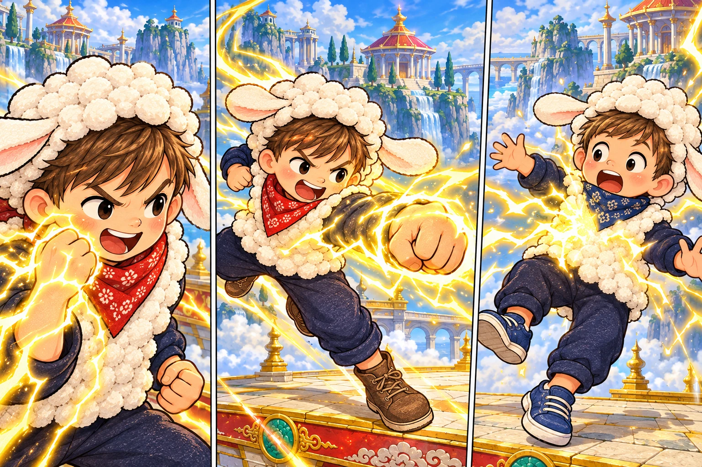

Un universo que pelea contigo
Pequeños héroes.
Peleas gigantes.
Lee el web cómicCapítulo 1 · La aventura comienzaAbrir el libro ↗
Poderes extraordinarios. Rivales inolvidables.
Entra al mundo de Element Fight.
En desarrollo. Próximamente para iOS y Android.



Encuentra a tu próximo favoritoEl juego
Tu estilo.
Tu poder. Tu pelea.
Una lucha de plataformas donde cada personaje cambia las reglas. Encadena golpes, domina el aire y vuelve al escenario cuando todo parece perdido.

Nao
Soberano del Horizonte
Cuando Nao parte el mar, la arena se convierte en un estrecho entre dos murallas de agua.
El escenario también pelea.
Ocho arenas. Nueve paisajes nuevos por descubrir.

Despegue en Atacama
Ascenso Orbital
El desierto tiembla bajo los motores. La arena comienza su viaje hacia el cielo.


Del juegoal papel
Web cómic
Cada pelea
tiene una historia.
Antes de partir en busca de la Piedra de la Vida, Alonso e Ito comparten una tarde de pesca.
Capítulo 1 · Página 1 disponible
Lee en español o inglés. El lector también reúne los avances ilustrados del juego.
Galería de arte
Hecho de imaginación.
Personajes, mundos y momentos.
Acércate al arte detrás de cada combate.
Desde el desarrollo
El mundo sigue creciendo.
Lo último del juego,
directo desde el proyecto.
El juego está en desarrollo. Pronto estará disponible para iOS y Android.